2026-05-21
Este trabalho apresenta uma implementação reprodutível do
Hamiltoniano BCS reduzido em qubits, usando pseudospins de Anderson,
evolução exata por exponenciação matricial e dinâmica aproximada por
Trotterização de primeira e segunda ordem. A implementação compara a
dinâmica matricial com uma realização em circuito Qiskit, mede
conservação do número de pares e extrai observáveis físicos úteis para
análise de supercondutividade em espaço de Hilbert pequeno: ocupações de
pares, matriz de correlação \(C_{ij}=\langle
b_i^\dagger b_j\rangle\), autovalor condensado, um proxy efetivo
de gap, uma função de Green retardada de pares e um canal anômalo de
Gor’kov organizado em uma matriz de resposta Nambu. Também é avaliada
uma versão medida do circuito em Qiskit Aer, com amostragem por shots,
ruído depolarizante simples, estimativa de energia termo a termo e
mitigação por extrapolação zero-noise. Para o caso de quatro qubits
estudado, a Trotterização de segunda ordem com 256 passos atinge
fidelidade 0.9999999957 em \(t=2.5\), e a série temporal até \(t=6.0\) preserva o número total de pares
com erro da ordem de \(10^{-14}\).
O modelo BCS descreve a formação coletiva de pares de Cooper em sistemas fermiônicos. Na formulação reduzida, pares de estados temporais reversos são tratados como graus de liberdade efetivos, que podem ser mapeados para pseudospins de Anderson. Esse mapeamento torna o problema naturalmente adequado à simulação quântica digital, pois cada modo de par pode ser representado por um qubit.
O objetivo deste projeto é construir uma ponte prática entre a formulação teórica do Hamiltoniano BCS reduzido e circuitos quânticos executáveis em ferramentas modernas. O foco aqui não é escalar para sistemas grandes, mas sim fixar uma implementação verificável, com métricas de erro e observáveis físicos claros. O trabalho foi desenvolvido como pesquisa independente e acompanhado por artefatos de reprodução, validação automatizada e metadados de citação.
Cada qubit representa um modo de par:
\[ \lvert 0\rangle = \text{modo sem par}, \qquad \lvert 1\rangle = \text{modo ocupado por um par de Cooper}. \]
O Hamiltoniano BCS reduzido usado nos experimentos é
\[ H = \sum_k \xi_k Z_k - \frac{g}{2}\sum_{i<j}(X_iX_j+Y_iY_j). \]
O primeiro termo representa energias de pseudospin associadas aos
níveis xi_k. O segundo termo troca pares entre modos,
preservando o número total de pares. O operador de número usado no
código é
\[ N = \sum_i \frac{I-Z_i}{2}. \]
Como \([H,N]=0\), a conservação de número de pares é uma verificação direta da consistência da implementação.
A evolução de referência é calculada por
\[ \lvert\psi(t)\rangle = \exp(-iHt)\lvert\psi(0)\rangle. \]
Ela é implementada em src/bcs.py sobre matrizes densas.
Essa escolha é adequada para o caso de validação com quatro qubits e
permite comparação direta com aproximações Trotterizadas.
A decomposição de primeira ordem aplica sequencialmente a exponencial de cada termo do Hamiltoniano:
\[ U_1(\Delta t)=\prod_a \exp(-iH_a\Delta t). \]
A decomposição de segunda ordem usa a forma simétrica:
\[ U_2(\Delta t)= \prod_a \exp\left(-iH_a\frac{\Delta t}{2}\right) \prod_a^{\mathrm{rev}} \exp\left(-iH_a\frac{\Delta t}{2}\right). \]
O erro é medido por fidelidade e norma do vetor diferença entre estado exato e estado Trotterizado.
A versão em circuito usa portas RZ, RXX e
RYY, compatíveis com os termos Z_i,
X_i X_j e Y_i Y_j. O circuito Trotterizado é
comparado contra a evolução matricial usando a mesma ordenação lógica de
qubits.
Além de energia, fidelidade e número total de pares, são extraídos:
[[G,F],[Fdag,Gdag]];Esses observáveis permitem discutir coerência coletiva dos pares mesmo em um modelo pequeno.
O experimento principal usa:
xi = [-1.0, -0.35, 0.35, 1.0];g = 0.8;t = 6.0;256 passos para as
séries temporais.Os comandos de reprodução estão documentados em
docs/bcs_paper_reproducibility.md.
A Figura 1 mostra a queda do erro de estado conforme aumenta o número
de passos de Trotter. Para \(t=2.5\), a
melhor linha da tabela usa ordem 2 e 256 passos, com fidelidade
0.9999999957 e erro de estado
0.0001037631.
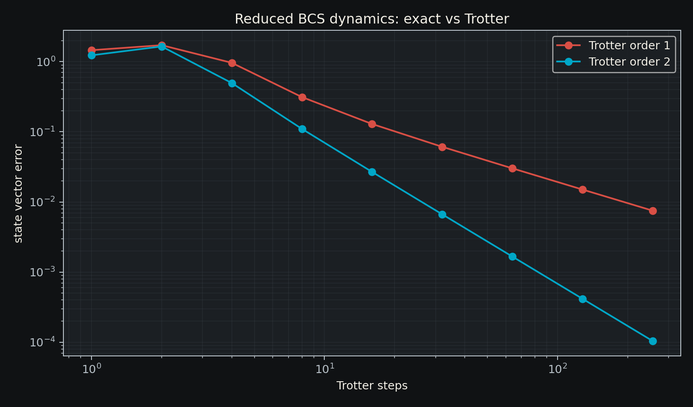
O circuito Qiskit de segunda ordem com oito passos para quatro qubits
produziu profundidade 177, tamanho 258,
fidelidade contra a evolução matricial 0.9999999999999658 e
erro de estado 1.3167e-15. Isso valida a convenção de
qubits e a decomposição em portas para o caso estudado.
A Figura 2 mostra a evolução temporal do proxy de gap efetivo e do
maior autovalor da matriz de correlação de pares. No tempo final \(t=6.0\), o gap exato é
0.8262711774, enquanto o valor Trotterizado é
0.8261816459.
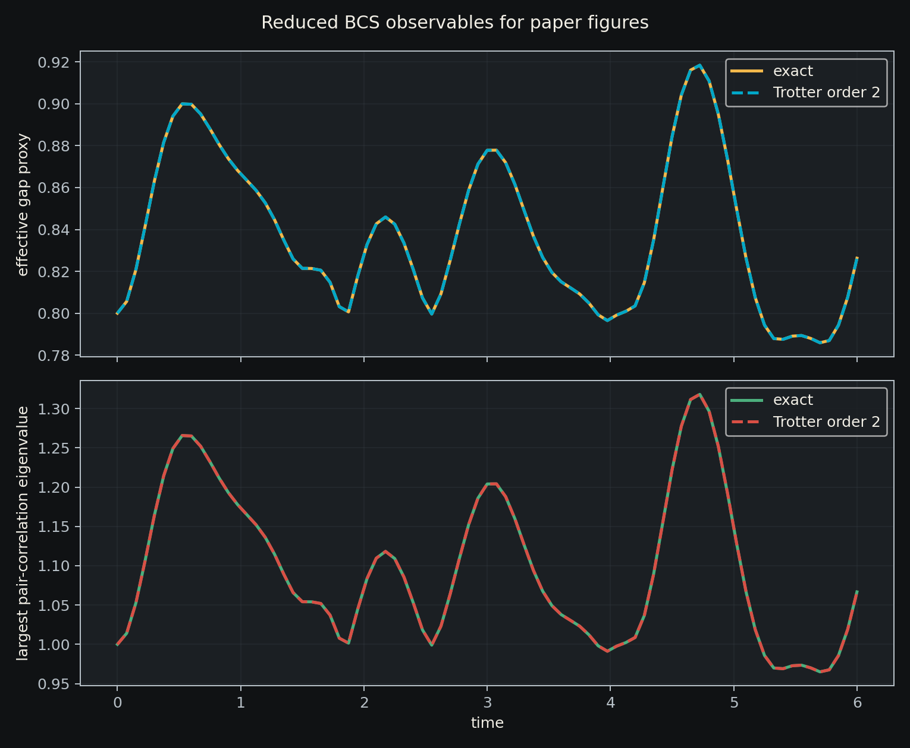
A Figura 3 mostra a transferência de ocupação entre os modos de par. No tempo final, as ocupações exatas são aproximadamente:
n0 = 0.8513
n1 = 0.8378
n2 = 0.1622
n3 = 0.1487O número total de pares permanece igual a 2.0, como
esperado pela simetria do Hamiltoniano.
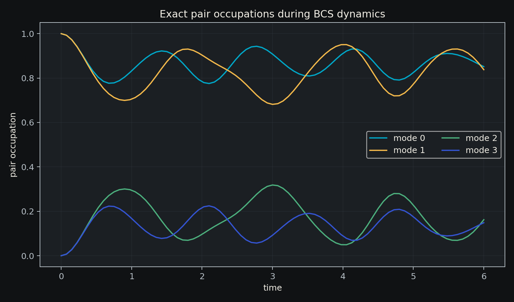
As Figuras 4 e 5 mostram os mapas finais de \(\lvert C_{ij}\rvert\) para evolução exata e Trotterizada. A semelhança visual entre os mapas reforça que a dinâmica Trotterizada preserva não apenas fidelidade global, mas também a estrutura de correlação de pares.
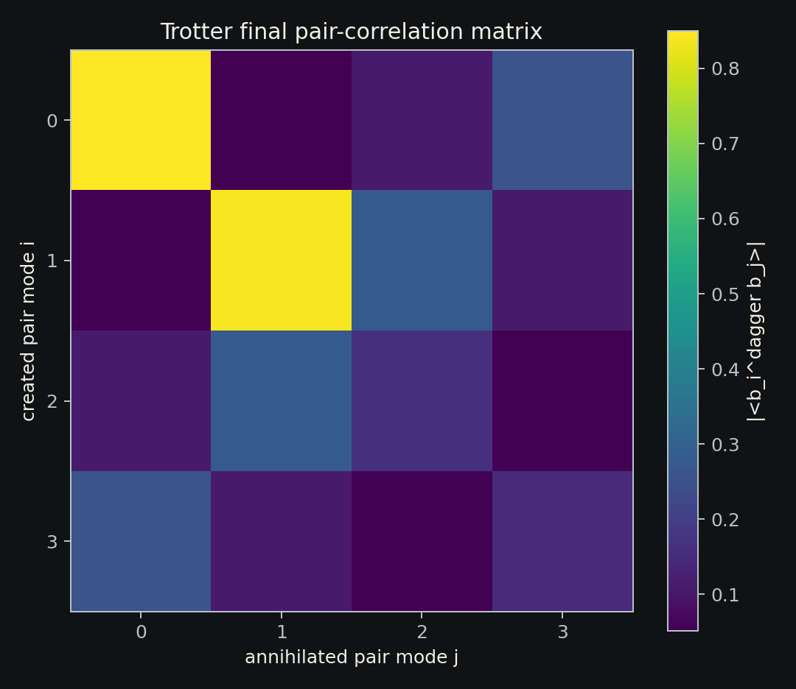
A próxima camada de resposta dinâmica é a função de Green retardada de pares:
\[ G^R_{ij}(t)=-i\theta(t)\langle[b_i(t),b_j^\dagger(0)]\rangle. \]
No experimento atual, foi calculado o canal local \(G^R_{00}(t)\) com amortecimento suave
eta=0.04 para estabilizar a transformada discreta. A Figura
6 mostra as partes real e imaginária da resposta no tempo.
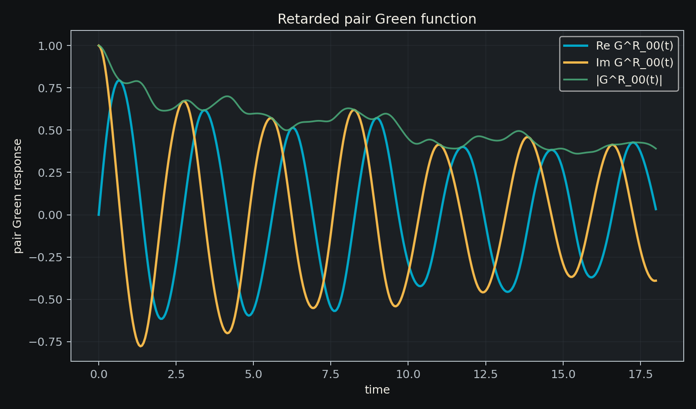
A Figura 7 mostra a densidade espectral aproximada obtida por FFT. O
maior pico positivo da janela calculada aparece em \(\omega=-1.0443\), com peso espectral
aproximado 0.04078. Essa etapa conecta a simulação digital
a observáveis de resposta linear e abre caminho para versões anômalas e
equações de Gor’kov.
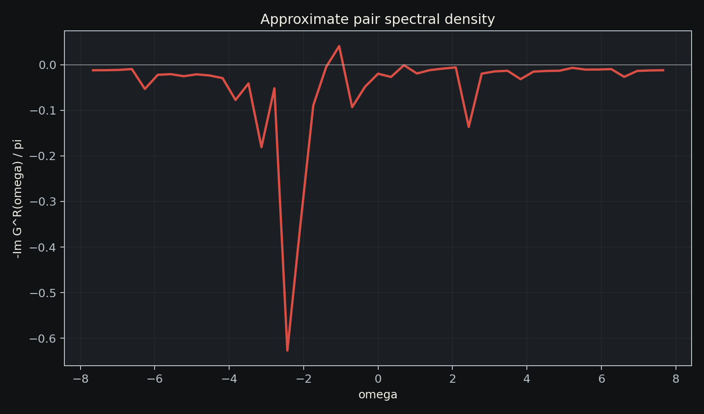
Para acessar uma resposta diretamente supercondutora, também calculamos
\[ F^R_{ij}(t)=-i\theta(t)\langle[b_i(t),b_j(0)]\rangle. \]
Em um estado de número fixo essa quantidade tende a zerar por conservação de número. Por isso, o experimento usa um estado produto BCS \(\prod_i(u_i\lvert0\rangle+v_i\lvert1\rangle)\), com fases relativas nos coeficientes \(v_i\), que representa uma ordem de fase efetiva em espaço pequeno.
A Figura 8 mostra o canal local \(F^R_{00}(t)\). Para os parâmetros usados, a
amplitude máxima foi |F|=0.27904.
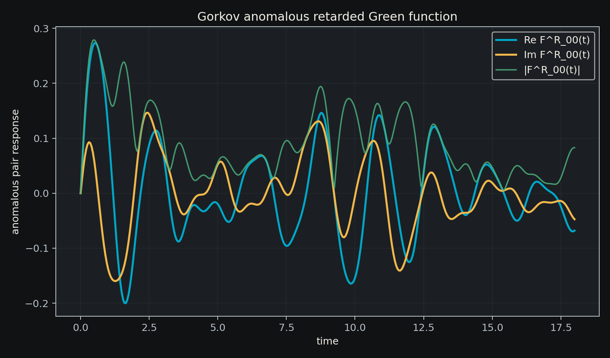
A Figura 9 mostra o espectro anômalo aproximado. O pico principal
aparece em \(\omega=3.1329\), com peso
espectral aproximado 0.23245.
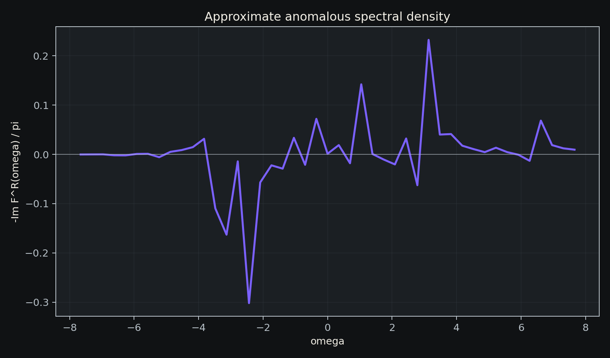
Os canais normal e anômalo podem ser organizados como uma matriz retardada em base Nambu:
\[ G_{\mathrm{Nambu}}^R(t)= \begin{pmatrix} G(t) & F(t)\\ F^\dagger(t) & G^\dagger(t) \end{pmatrix}. \]
Essa forma coloca a resposta de quasipartícula de par e a resposta
supercondutora anômala no mesmo objeto. A Figura 10 compara as
magnitudes dos quatro canais para i=j=0.
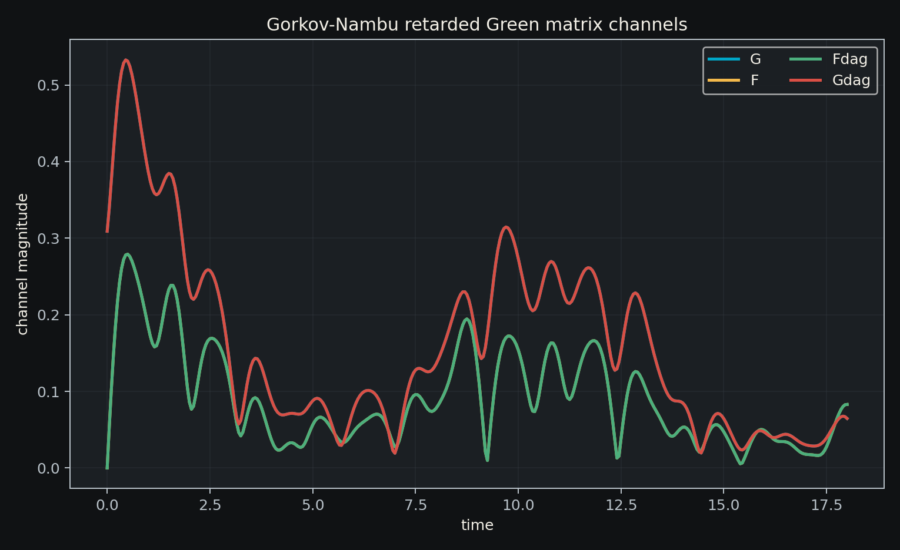
A Figura 11 mostra o traço espectral aproximado da matriz Nambu. O
pico principal do traço aparece em \(\omega=-2.4367\), com peso espectral
aproximado 0.67376. O máximo temporal de \(\lvert\operatorname{Tr}G_{\mathrm{Nambu}}\rvert\)
foi 1.03543, e o máximo de \(\lvert\det G_{\mathrm{Nambu}}\rvert\) foi
0.20646.
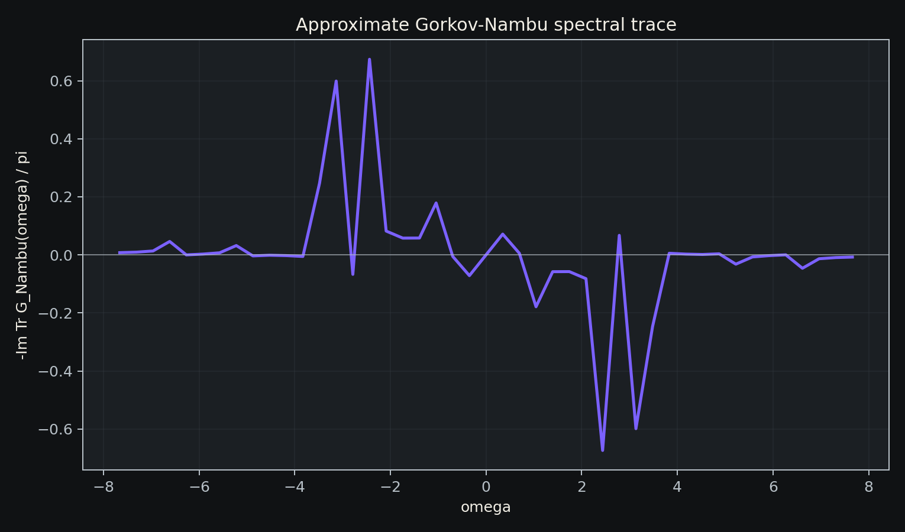
Para aproximar a simulação de um fluxo experimental de computação
quântica, o circuito Trotterizado foi medido na base computacional em
Qiskit Aer. As ocupações n_i e o número total de pares
foram estimados a partir das contagens. Foram comparados cinco regimes
de shots (1024, 4096, 8192,
16384 e 32768) em simulação ideal e com ruído
depolarizante simples.
A Figura 12 mostra que o número total de pares é robusto neste caso porque erros de bit tendem a se compensar parcialmente na soma. A informação de ocupação por modo, porém, é fortemente degradada pelo ruído.
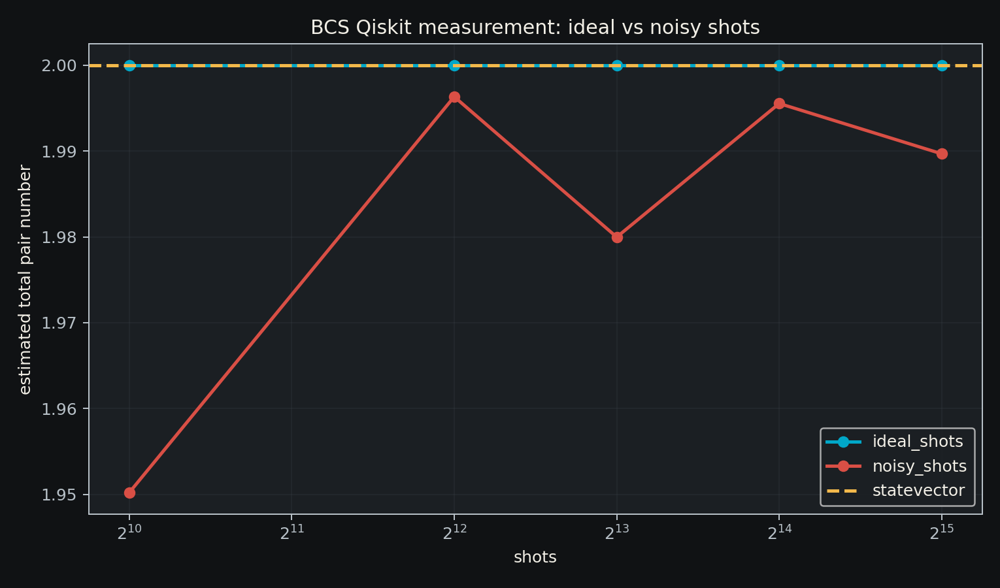
A Figura 13 compara as ocupações de pares no maior orçamento de
shots. Com 32768 shots ideais, as ocupações ficam próximas
do statevector; com ruído, os modos são deslocados em direção a
ocupações próximas de 0.5, como esperado em um canal
depolarizante forte.
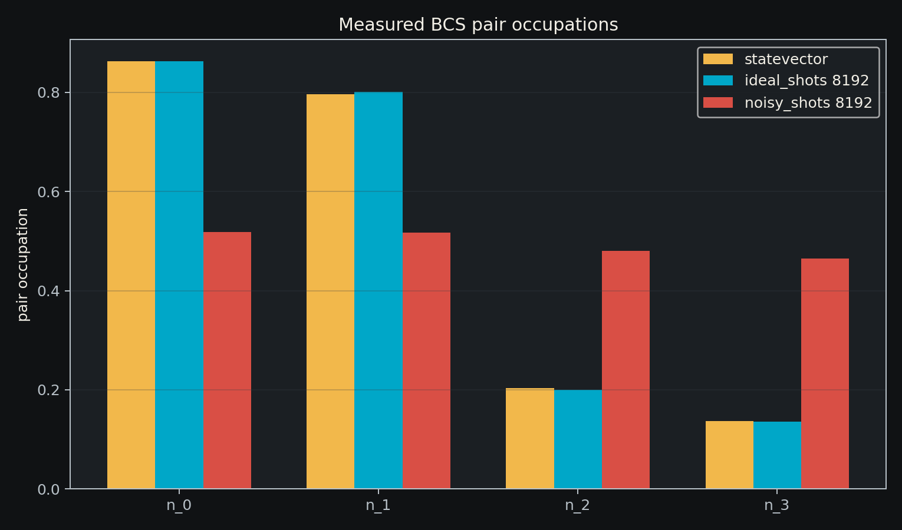
O Hamiltoniano BCS reduzido já está escrito como soma de strings de Pauli:
\[ E=\sum_k c_k\langle P_k\rangle. \]
Cada termo foi medido em sua base própria: termos Z
diretamente na base computacional, termos X após rotações
H, e termos Y após S^\dagger H. O
circuito Trotterizado com oito passos tem energia de statevector
2.61166, enquanto a evolução exata no mesmo tempo conserva
a energia 2.70000. A diferença entre esses valores reflete
o erro de Trotterização.
A Figura 14 compara as energias estimadas. Com shots ideais, a energia fica próxima do statevector; com ruído depolarizante, a energia é fortemente subestimada.
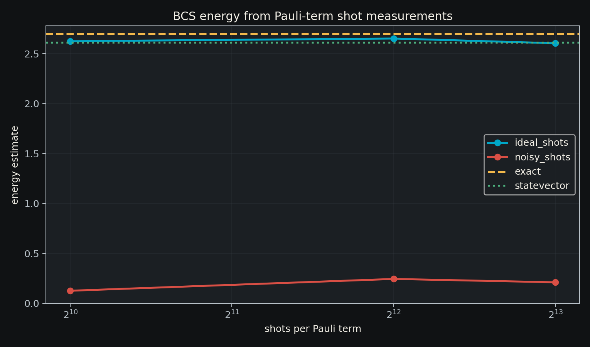
A Figura 15 mostra o erro absoluto em relação ao statevector
Trotterizado. No maior orçamento usado (32768 shots por
termo), o erro ideal foi 0.00035, enquanto o erro ruidoso
ficou em 2.39759.
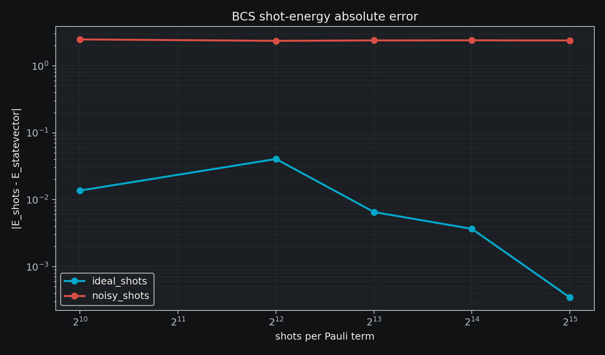
Como demonstração de mitigação simples, a energia ruidosa foi medida
em quatro escalas artificiais de ruído depolarizante: \(\lambda=0.25,0.5,0.75,1.0\), com base
p1=0.0005 para portas de um qubit e p2=0.005
para portas de dois qubits. Um ajuste linear \(E(\lambda)=a\lambda+b\) foi usado para
estimar o limite de ruído zero b.
A Figura 16 mostra os pontos ruidosos e a extrapolação linear. Para
16384 shots por termo de Pauli, a energia ruidosa em \(\lambda=1\) foi 1.40423,
enquanto a energia mitigada foi 2.47545. O valor de
statevector Trotterizado é 2.61166.
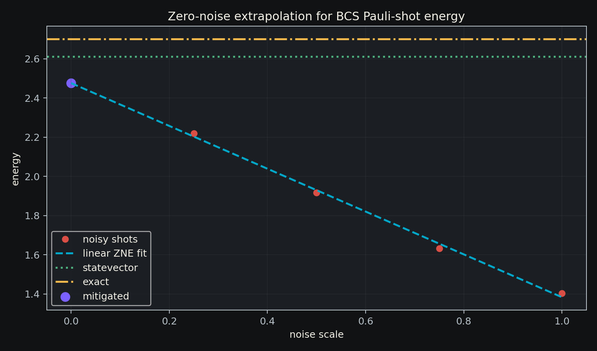
A Figura 17 compara o erro antes/depois da mitigação. O erro contra o
statevector foi reduzido de 1.20743 para
0.13621. A melhora é clara, mas ainda limitada, indicando
que o regime de ruído não é perfeitamente linear e que técnicas mais
robustas podem ser investigadas.
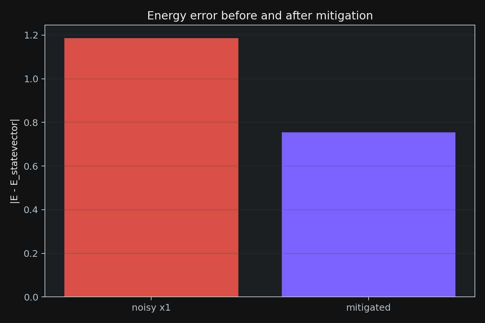
Os resultados mostram três pontos principais. Primeiro, a conservação
do número de pares é preservada numericamente, com diferença final entre
evolução exata e Trotterizada da ordem de 2.1e-13. Segundo,
a Trotterização de segunda ordem reduz rapidamente o erro para o regime
de parâmetros estudado. Terceiro, a implementação em circuito Qiskit
reproduz a dinâmica matricial dentro da precisão numérica.
O sistema de quatro qubits ainda é pequeno, mas serve como unidade de
validação para experimentos maiores. O mesmo pipeline pode ser usado
para varrer g, alterar a distribuição de xi_k,
aumentar o número de modos e estudar a robustez dos observáveis contra
ruído ou medições finitas.
Foi construída uma implementação integrada do Hamiltoniano BCS reduzido em qubits, incluindo dinâmica exata, Trotterização, circuito Qiskit e observáveis físicos de pares. O código produz tabelas e figuras reprodutíveis para análise de erro, estrutura condensada, resposta retardada, canal anômalo de Gor’kov, matriz Nambu completa, medições por shots e estimativa de energia por decomposição Pauli, incluindo uma primeira mitigação zero-noise. A etapa seguinte natural é aplicar mitigação de leitura e alocação adaptativa de shots por termo.
O código, os experimentos, os resultados tabulados, as figuras e os artefatos renderizados estão organizados no repositório público:
https://github.com/aocbaeta/quantum_compOs principais componentes para reprodução são:
src/bcs.py;src/bcs_qiskit.py;experiments/08_bcs_dynamics_trotter.py;experiments/09_bcs_qiskit_trotter_circuit.py;experiments/10_bcs_paper_observables.py;experiments/11_bcs_pair_green_function.py;experiments/12_bcs_gorkov_anomalous_green.py;experiments/13_bcs_gorkov_nambu_matrix.py;experiments/14_bcs_qiskit_shots_noise.py;experiments/15_bcs_qiskit_energy_shots.py;experiments/16_bcs_qiskit_error_mitigation.py;docs/bcs_paper_reproducibility.md;notebooks/bcs_paper_reproduction.ipynb;results/notebooks/bcs_paper_reproduction.pdf.A validação automatizada do pacote é feita por:
PYTHONPATH=src .venv/bin/python -m pytest -q tests
.venv/bin/python scripts/validate_bcs_paper_artifacts.pyO código-fonte é distribuído sob a licença BSD-3-Clause. A
documentação, o manuscrito, as figuras, os notebooks, as tabelas e os
artefatos renderizados são distribuídos sob CC BY 4.0. O arquivo
CITATION.cff contém os metadados de citação recomendados.
Como esta pesquisa é independente, qualquer uso acadêmico ou derivado
dos resultados deve citar o projeto e preservar a atribuição ao
autor.
Se este repositório, seus resultados, figuras, tabelas, código ou ideias forem usados em trabalhos acadêmicos, relatórios, apresentações ou software, cite:
Andre Baeta, "Quantum Comp: reduced BCS Hamiltonian quantum simulation workflow",
GitHub repository, https://github.com/aocbaeta/quantum_comp.Para ferramentas que reconhecem metadados formais, use o arquivo
CITATION.cff no repositório.